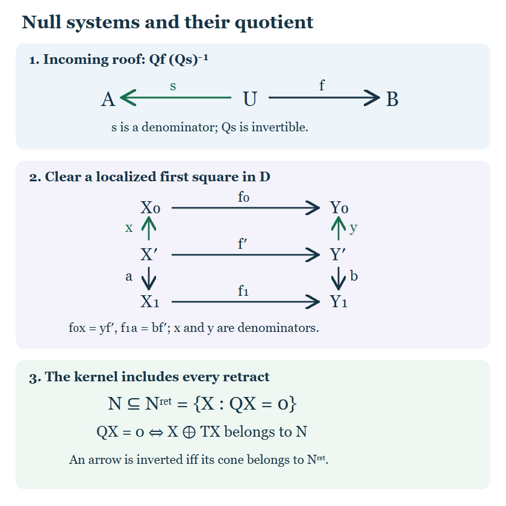

Draft lesson.
Null systems, roofs and the retract kernel
Written by GPT-6.1 Sol (OpenAI), October 2026. Self-checked by the writing AI (GPT-6.1 Sol, Ultra). Public domain (CC0).
A triangulated quotient makes specified objects zero by inverting maps whose cones belong to a null system. The quotient has complete distinguished triangles, including arbitrary square completions and prescribed octahedra. Its kernel is the retract closure of the null system, which can be larger than the original collection of objects.
We use the complete fraction construction in One-sided fractions and saturation, the additive interface in Additive localization and projector decompositions, and the Hom exactness, comparison and existing triangle-sum proofs in Translations, coherent powers and universal triangle comparisons. The full opposite triangulation, including its connecting arrow, is proved in Connecting signs and opposite triangle structures.
Work with an additive triangulated category \(D\), translation \(T\), and a chosen quasi-inverse \(S\). Keep the natural isomorphisms \(\eta:1_D\to ST\), \(\epsilon:TS\to1_D\) and their identities \(\epsilon_{TX}T\eta_X=1_{TX}\), \(S\epsilon_X\eta_{SX}=1_{SX}\). We use ambient Choice as in Universes and small categories. Choose an ambient universe containing the objects, arrows and denominator diagrams below; starting-universe local smallness alone does not guarantee that localized Hom sets remain in that universe.
1. Null systems and the inherited triangle structure
A full subcategory \(N\subset D\) is replete if it contains every object of \(D\) isomorphic to one of its objects. Here a null system is a full replete subcategory satisfying these three conditions:
- A zero object belongs to \(N\).
- \(X\in N\) if and only if \(TX\in N\).
- In a distinguished triangle \(X\to Y\to Z\to TX\), membership of \(X,Z\) in \(N\) implies membership of \(Y\).
Theorem 1.1. These conditions are equivalent to \(N\) being a full replete triangulated subcategory with its inherited structure. They imply that any two vertices of a distinguished triangle in \(N\) force the third to belong to \(N\). They do not require closure under retracts.
Proof. Rotation proves the other two placements of the pair of vertices. For inverse rotation, \(SZ\in N\) follows from \(TSZ\simeq Z\), repleteness and condition 2. Thus both rotations stay in \(N\). The split distinguished triangle \(X\to X\oplus Y\to Y\to TX\) puts \(X\oplus Y\) in \(N\) whenever \(X,Y\) are in \(N\). Fullness keeps the Hom groups and their bilinear composition; consequently \(N\) is additive.
Both \(T\) and its chosen inverse restrict, as do \(\eta,\epsilon\). The identity and zero triangles belong to \(N\). Completing any map between two \(N\) objects in \(D\) gives a third vertex in \(N\), by the two-out-of-three condition. Triangle isomorphisms and both rotations are inherited. A completed square in \(D\) is a square in \(N\), since the subcategory is full. In an octahedron whose original vertices belong to \(N\), all three chosen cones belong to \(N\) by two-out-of-three; every fourth-row arrow and every face therefore belongs to \(N\). The complete original octahedron proves the inherited octahedral axiom.
Conversely a full replete triangulated subcategory contains zero and is stable in both translation directions. Suppose the endpoints \(X,Z\) of a distinguished \(D\) triangle belong to it. Inverse rotation starts with an arrow \(SZ\to X\) between its objects. Complete that arrow within the subcategory. The two distinguished completions in \(D\) are isomorphic by the two-vertex comparison theorem, fixing their first two vertices. The remaining vertex \(Y\) is therefore isomorphic to an object in the subcategory, so repleteness puts \(Y\) in it. This proves condition 3. \(\square\)
Lemma 1.2 (the zero-cone criterion). In a distinguished triangle \(X\xrightarrow fY\xrightarrow gZ\xrightarrow hTX\), the map \(f\) is invertible if and only if \(Z\) is zero.
Proof. If \(Z\) is zero, the rotated Hom exact sequences make \(\operatorname{Hom}(K,f)\) bijective for every \(K\). At \(K=Y\) obtain \(e:Y\to X\) with \(fe=1_Y\). Injectivity at \(K=X\) and \(f(ef)=f\) give \(ef=1_X\). Conversely if \(f\) is invertible, the consecutive-composite equations \(gf=0\), \((Tf)h=0\) imply \(g=h=0\). Exactness at \(\operatorname{Hom}(Z,Z)\) then gives \(1_Z=0\). Such an object is zero: every map to or from it equals zero by its identity equation. This proof applies in any triangulated category, so will also apply in \(L\) once its axioms are established. \(\square\)
2. Cone denominators in both directions
Define \(W_N\) to consist of maps \(f:X\to Y\) for which some distinguished triangle
\[ X\xrightarrow fY\longrightarrow C_f\longrightarrow TX \]has \(C_f\in N\). Two-vertex comparison and repleteness show that “some” can be replaced by “any”.
Theorem 2.1. The class \(W_N\) contains all isomorphisms, satisfies two-out-of-three for composition, is preserved by \(T,S\), and admits both incoming and outgoing calculi of fractions.
Proof. A completion of an isomorphism has zero third vertex, by the zero-cone criterion. For composable \(f,g\), the prescribed octahedron has a distinguished fourth row
\[ C_f\longrightarrow C_{gf}\longrightarrow C_g\longrightarrow TC_f. \]Triangle two-out-of-three proves all three composition cases, including closure under composition. Three rotations, their specified signs, and vertex sign isomorphisms produce a distinguished translated completion; its cone is \(TC_f\). This and two-way translation stability of \(N\) prove preservation and reflection by \(T\). The unit and counit comparisons then prove preservation by \(S\).
For outgoing Ore, take \(f:X\to Y\) and \(s:X\to X'\) in \(W_N\). An inverse-rotated completion of \(s\) is
\[ B\xrightarrow bX\xrightarrow sX'\longrightarrow TB, \qquad B\in N. \]Complete \(fb:B\to Y\) to \(B\to Y\xrightarrow tY'\to TB\). Rotation shows \(t\in W_N\). Triangle square completion on the first arrows, with vertex maps \(1_B,f\), gives \(a:X'\to Y'\) such that \(as=tf\). Thus the required square and its new outgoing denominator are constructed.
For outgoing cancellation suppose \(f,g:X\to Y\) and \(s:X'\to X\) in \(W_N\) satisfy \(fs=gs\). Complete \(s\) to \(X'\to X\xrightarrow jC\to TX'\), with \(C\in N\). Contravariant Hom exactness gives \(a:C\to Y\) with \(f-g=aj\). Complete \(a\) to \(C\to Y\xrightarrow tY'\to TC\). Here \(t\in W_N\), and \(ta=0\), so \(tf=tg\). The hypothesis is the typed equation \((f-g)s=0\).
The proved opposite triangle structure has translation \(S\), with a triangle declared distinguished precisely by the complete reverse \(D\) triangle and its counit-corrected connecting map. Its reversed cone is a translate of the original cone. Hence \(N^{\mathrm{op}}\) is a null system and its cone denominators are exactly the reversals of \(W_N\). Applying the two outgoing constructions there gives, in \(D\), the incoming Ore equation \(tg=fs\) with \(s\) an incoming denominator, and cancellation after precomposition when equality holds after postcomposition by a denominator. This proves both calculi with the required domains and signs. \(\square\)
3. The quotient and three Hom formulas
Let \(L=D[W_N^{-1}]\) be the ordinary fraction category, and \(Q:D\to L\) its localization functor. We also write \(D/N\) for this actual localization. An outgoing roof is \(A\xrightarrow fV\xleftarrow tB\), with \(t\in W_N\), and represents \((Qt)^{-1}Qf\). An incoming roof is \(A\xleftarrow sU\xrightarrow fB\), with \(s\in W_N\), and represents \(Qf(Qs)^{-1}\).
Let \(O_B\) have objects \(t:B\to V\) in \(W_N\) and arrows \(a:V\to V'\) with \(at=t'\). Let \(I_A\) have objects \(s:U\to A\) in \(W_N\), with an arrow from \(s\) to \(s'\) represented by \(h:U'\to U\) satisfying \(sh=s'\). Thus \(I_A\) is the opposite of the ordinary incoming denominator category.
Theorem 3.1. Both index categories are filtered, every comparison \(a,h\) is a denominator, and there are natural abelian-group isomorphisms
\[ \begin{aligned} \operatorname{Hom}_L(QA,QB) &\simeq\operatorname*{colim}_{t\in O_B}\operatorname{Hom}_D(A,V)\\ &\simeq\operatorname*{colim}_{s\in I_A}\operatorname{Hom}_D(U,B)\\ &\simeq\operatorname*{colim}_{(s,t)\in I_A\times O_B}\operatorname{Hom}_D(U,V). \end{aligned} \tag{3.1} \]The maps from the three colimits are \([f]\mapsto(Qt)^{-1}Qf\), \([f]\mapsto Qf(Qs)^{-1}\), and \([f]\mapsto(Qt)^{-1}Qf(Qs)^{-1}\), respectively.
Proof. The identities make the categories nonempty. The relevant Ore square gives common refinements of pairs of denominators. If \(a,b\) are parallel arrows in \(O_B\), then \(at=bt\), and outgoing cancellation equalizes them after a further outgoing denominator. The incoming cancellation argument proves the parallel-arrow condition for \(I_A\). These are the three filteredness conditions. Two-out-of-three applied to \(at=t'\) or \(sh=s'\) makes each comparison itself a denominator.
For the first two formulas, roofs prove surjectivity. Put two representatives at a common denominator. The outgoing or incoming equality test says equality after localization precisely when a further denominator kills their numerator difference. This is exactly equality at a later stage of the filtered colimit, proving injectivity. The additive fraction interface gives the common-denominator sum, so these bijections preserve addition.
The product index is filtered by making common refinements and equalizers in each coordinate. Inserting \(t=1_B\) in an incoming roof proves surjectivity of the third map. Move two representatives to common \(s,t\). Equality of their localized images implies \(Q(f-g)=0\); incoming cancellation gives \(h:U'\to U\) in \(W_N\) with \((f-g)h=0\). Refining \(s\) to \(sh\) makes the representatives equal in the product diagram. This proves injectivity. Both transition operations, \(f\mapsto af\) and \(f\mapsto fh\), are homomorphisms and commute. The displayed maps therefore preserve addition. Precomposition and postcomposition commute with these maps for ordinary arrows. They consequently commute for inverse denominators as well, by inverting the corresponding naturality equations. Such arrows generate \(L\), which proves the claimed naturality. All colimits are taken in the specified ambient universe. \(\square\)
The additive interface also proves that \(L\) is additive, that \(Q0\) is zero, and that \(Q\) preserves finite biproducts. For a common incoming denominator, addition is explicitly
\[ Qf(Qs)^{-1}+Qg(Qs)^{-1}=Q(f+g)(Qs)^{-1}. \tag{3.2} \]4. Hom exactness before square completion
Apply \(T,S\) to both parts of each roof. They descend to additive functors \(T_L,S_L\), since they preserve denominators. Naturality of \(\eta,\epsilon\) on ordinary arrows extends to inverse denominators; their same object components give natural isomorphisms \(1_L\to S_LT_L\) and \(T_LS_L\to1_L\). The original triangle identities still hold. Thus \(T_L\) is a translation equivalence with its full inverse comparison data.
Call a triangle in \(L\) proposed distinguished when it is isomorphic, including its middle and connecting squares, to the image of a distinguished \(D\) triangle. For that image the connecting map is \(Qh:QZ\to QT X=T_LQX\).
Lemma 4.1. Both Hom sequences of every proposed distinguished triangle are exact, before any square-completion axiom in \(L\) is invoked.
Proof. For fixed \(QA\), the covariant sequence of an image triangle is the \(I_A\)-filtered colimit of the exact sequences \(\operatorname{Hom}_D(U,-)\). For fixed \(QB\), its contravariant sequence is the \(O_B\)-filtered colimit of the exact sequences \(\operatorname{Hom}_D(-,V)\). These identifications include all connecting arrows, by the naturality in Theorem 3.1.
Here is the complete exactness argument for either colimit. A class killed by the next map is represented at one index; its next image becomes zero at a later index by the colimit equality test. Exactness at that later index supplies a preceding preimage. This preimage represents the original middle class. Conversely consecutive composites vanish at every stage, so their colimit composites vanish. Rotation gives all positions. An isomorphism of complete triangles transports both sequences, proving the result for every proposed triangle. \(\square\)
Lemma 4.2. A morphism of proposed distinguished triangles with two invertible vertex maps has an invertible third map.
Proof. Rotate so the unknown map is the middle of a five-term Hom comparison. Lemma 4.1 gives exact rows \(A_1\xrightarrow{d_1}A_2\xrightarrow{d_2}A_3\xrightarrow{d_3}A_4\xrightarrow{d_4}A_5\) and \(B_1\xrightarrow{e_1}B_2\xrightarrow{e_2}B_3\xrightarrow{e_3}B_4\xrightarrow{e_4}B_5\), with commuting comparisons \(u_i:A_i\to B_i\). All \(u_i\) except possibly \(u_3\) are isomorphisms.
For \(b_3\in B_3\), set \(a_4=u_4^{-1}e_3b_3\). Then \(u_5d_4a_4=e_4e_3b_3=0\), so \(d_4a_4=0\). Choose \(a_3\) with \(d_3a_3=a_4\). The element \(b_3-u_3a_3\) is in \(\ker e_3\), so equals \(e_2b_2\). Choose \(a_2=u_2^{-1}b_2\). Now \(u_3(a_3+d_2a_2)=b_3\), proving surjectivity.
If \(u_3a_3=0\), injectivity of \(u_4\) gives \(d_3a_3=0\); write \(a_3=d_2a_2\). We have \(e_2u_2a_2=0\), so \(u_2a_2=e_1b_1\). Choose \(a_1=u_1^{-1}b_1\). Injectivity of \(u_2\) implies \(a_2=d_1a_1\), and consequently \(a_3=d_2d_1a_1=0\). This proves injectivity.
Thus \(\operatorname{Hom}_L(K,c)\) is bijective for every \(K\), where \(c:C\to C'\) is the remaining vertex map. At \(K=C'\) obtain \(e\) with \(ce=1\); injectivity at \(K=C\) and \(c(ec)=c\) then give \(ec=1\). \(\square\)

The incoming denominator points into the source. Clearing both given localized vertex maps produces a commuting square in \(D\); its first two comparison maps become invertible under \(Q\). The object kernel is \(N^{\mathrm{ret}}\), not necessarily \(N\). These are categorical arrow and inclusion diagrams, rather than a metric picture.
5. All localized triangle axioms
Theorem 5.1. The proposed distinguished triangles make \(L=D/N\) triangulated, and \(Q\), with its displayed translation comparison, is triangulated.
Proof. Identity triangles and closure under isomorphism are inherited. Complete an arbitrary arrow \(\varphi=Qa(Qs)^{-1}:QX\to QY\) by taking an actual completion of \(a:U\to Y\) in \(D\) and transporting its first vertex along \(Qs:QU\to QX\). If its connecting map is \(h\), the new last map is \(T_L(Qs)Qh\). Both directions of rotation commute with the image construction and its sign, so the rotation axiom holds.
For square completion first identify the two proposed triangles with images of distinguished \(D\) triangles. Write their first arrows as \(f_0:X_0\to Y_0\), \(f_1:X_1\to Y_1\), and the given localized square as
\[ \beta Qf_0=Qf_1\alpha. \tag{5.1} \]Represent \(\beta\) by an incoming roof \(y:Y'\to Y_0\), \(b:Y'\to Y_1\). Incoming Ore gives \(x_0:X''\to X_0\) in \(W_N\) and \(k:X''\to Y'\) with \(f_0x_0=yk\). Represent \(\alpha Qx_0\) by \(z:X'''\to X''\) in \(W_N\) and \(a_0:X'''\to X_1\). Put \(x_*=x_0z\), \(f_*=kz\). Equation (5.1) implies \(Q(bf_*-f_1a_0)=0\). The incoming equality test supplies \(c:X'\to X'''\) in \(W_N\) killing that difference. Set
\[ x=x_*c,\qquad f'=f_*c,\qquad a=a_0c. \]Now \(f_0x=yf'\), \(f_1a=bf'\) hold in \(D\), \(x,y\) are denominators, and
\[ \alpha=Qa(Qx)^{-1},\qquad\beta=Qb(Qy)^{-1}. \]Complete \(f'\) in \(D\). Original square completion gives triangle morphisms \((x,y,c_0)\) and \((a,b,c_1)\) to the two original triangles. Lemma 4.2 makes \(Qc_0\) invertible. The third localized vertex map \(Qc_1(Qc_0)^{-1}\) therefore completes the given square, including its connecting square. Transporting back along the initial triangle isomorphisms proves square completion for arbitrary proposed triangles. This argument needs invertibility of \(Qc_0\), not membership of \(c_0\) in an unsaturated original denominator class.
For the octahedron take composable arrows \(\varphi:QX\to QY\), \(\psi:QY\to QZ\), with three prescribed proposed distinguished completions, including that of \(h=\psi\varphi\). Write incoming roofs \(\varphi=Qa(Qs)^{-1}\), \(\psi=Qb(Qt)^{-1}\), with \(s:U\to X\), \(t:V\to Y\). Incoming Ore supplies \(c:W\to U\) in \(W_N\) and \(d:W\to V\) with \(ac=td\). The original composable pair \(W\xrightarrow dV\xrightarrow bZ\) compares to \(\varphi,\psi\) by first-vertex maps \(Q(sc),Qt,1_{QZ}\). These are isomorphisms and both first squares, as well as their composite, commute.
Choose actual distinguished completions for \(d,bd,b\) in \(D\), and their full original octahedron. The already proved localized square axiom compares their image triangles to the three prescribed triangles. Lemma 4.2 makes the resulting cone maps \(\lambda_1,\lambda_2,\lambda_3\) isomorphisms. If the original fourth row has arrows \(u,v,w\), set
\[ \begin{aligned} U&=\lambda_2Qu\lambda_1^{-1},\\ V&=\lambda_3Qv\lambda_2^{-1},\\ W&=T_L(\lambda_1)Qw\lambda_3^{-1}. \end{aligned} \tag{5.2} \]Let \(i_\varphi,i_h,i_\psi\) denote the prescribed second arrows and \(p_\varphi,p_h,p_\psi\) the prescribed connecting arrows. Conjugating the original face equations by the complete triangle comparisons gives
\[ \begin{gathered} Ui_\varphi=i_h\psi,\qquad p_hU=p_\varphi,\\ Vi_h=i_\psi,\qquad p_\psi V=T_L(\varphi)p_h,\\ W=T_L(i_\varphi)p_\psi. \end{gathered} \tag{5.3} \]The fourth row \(C_\varphi\xrightarrow U C_h\xrightarrow V C_\psi\xrightarrow W T_L C_\varphi\) is isomorphic, by the three \(\lambda\)'s and \(T_L\lambda_1\), to the image of the original distinguished fourth row. It is therefore distinguished. This gives the prescribed octahedron, all four faces, and its exact last map. Every triangle axiom has now been proved; the image construction also proves that \(Q\) is triangulated. \(\square\)
6. The structured universal property
Theorem 6.1. The functor \(Q\) kills \(N\). Every triangulated functor \((F,\xi):D\to E\) killing \(N\) factors uniquely through \(Q\) as a triangulated functor, with its fixed comparison \(\xi:FT\to T_EF\). Compatible natural transformations descend uniquely as well.
Proof. For \(N_0\in N\), the distinguished triangle \(0\to N_0\xrightarrow1N_0\to0\) shows that \(0\to N_0\) is a denominator. Thus \(QN_0\simeq Q0\) is zero. If \(F\) kills \(N\), its image of a denominator completion has zero third vertex. The zero-cone criterion in \(E\) makes the image denominator invertible. Ordinary fraction descent gives the unique functor with \(\overline FQ=F\) and
\[ \overline F\bigl(Qa(Qs)^{-1}\bigr)=F(a)F(s)^{-1}. \]Common-denominator addition (3.2) makes it additive. Give it the same object components \(\overline\xi_{QX}=\xi_X\). Naturality holds for numerator arrows and for denominators, hence for their inverses. On an image triangle its last map becomes \(\xi_XFh\), exactly the last map prescribed by the original triangulated functor. Thus it preserves image triangles and every triangle isomorphic to one. It is triangulated.
A natural transformation is already specified on every object of \(L\). Naturality for ordinary arrows and the inverted naturality equation for denominators prove naturality on roofs. Its translation compatibility is the same equality on unchanged object components. Consequently compatible transformations descend uniquely, without requiring their components to be invertible. Conversely every functor factoring through \(Q\) kills \(N\), because \(Q\) does. This proves the structured universal property on both functors and their morphisms. \(\square\)
7. Zero morphisms and the retract kernel
Write \(N^{\mathrm{ret}}\) for the objects isomorphic to retracts of objects in \(N\): there are \(i:X\to N_0\), \(r:N_0\to X\), with \(ri=1_X\) and \(N_0\in N\).
Theorem 7.1. A map \(f:X\to Y\) has \(Qf=0\) if and only if it factors through an actual object of \(N\). Moreover the following are equivalent:
\[ QX=0;\quad X\in N^{\mathrm{ret}};\quad X\oplus Y\in N\text{ for some }Y;\quad X\oplus TX\in N. \tag{7.1} \]Proof. If \(Qf=0\), incoming cancellation gives \(s:X'\to X\) in \(W_N\) with \(fs=0\). Complete it to \(X'\to X\xrightarrow jC\to TX'\), with \(C\in N\). Contravariant Hom exactness writes \(f=aj\) through \(C\). Conversely \(Q\) kills any factorization through \(N\).
Apply this to \(1_X\) to obtain \(ri=1_X\) through \(N_0\in N\) whenever \(QX=0\). Conversely such a retraction becomes a retraction of zero, so \(1_{QX}=0\) and \(QX\) is zero.
We next construct an actual complement. Complete \(i\) to \(X\xrightarrow iN_0\xrightarrow jY\xrightarrow hTX\). Since \((Ti)h=0\) and \(Ti\) has left inverse \(Tr\), we have \(h=0\). Covariant Hom exactness gives \(u:Y\to N_0\) with \(ju=1_Y\). Replace \(u\) by \(u-iru\); it still satisfies \(ju=1_Y\), and now \(ru=0\). The maps \((i,u):X\oplus Y\to N_0\) and \((r,j):N_0\to X\oplus Y\) have one composite the identity. For the other, put \(\delta=1_{N_0}-ir-uj\). We have \(j\delta=0\); Hom exactness gives \(\delta=iv\). Also \(r\delta=0\), so \(v=ri v=0\). Therefore \(\delta=0\), and these maps are inverse. Repleteness puts \(X\oplus Y\) in \(N\). The converse follows from the canonical inclusion and projection of a biproduct.
For completeness a distinguished completion \(X\xrightarrow0X\xrightarrow gC\xrightarrow hTX\) has \(C\simeq X\oplus TX\). Contravariant Hom exactness supplies \(r:C\to X\) with \(rg=1_X\), since precomposition with its first arrow is zero. Apply the split-monomorphism construction just proved to the distinguished rotation \(X\xrightarrow gC\xrightarrow hTX\to TX\), whose last arrow is zero. It constructs inverse biproduct maps and gives this exact complement \(TX\).
Finally take \(X\oplus Y\in N\) and the endomorphism \(e=\operatorname{diag}(0_X,1_Y)\). The sum of that zero-map completion and the identity triangle of \(Y\) is a completion of \(e\). The existing triangle-sum theorem proves this sum distinguished. Both first vertices belong to \(N\), so its third vertex \((X\oplus TX)\oplus0\) belongs to \(N\). Repleteness gives \(X\oplus TX\in N\). Conversely this last condition is the preceding biproduct condition with \(Y=TX\). This proves every equivalence in (7.1), without assuming arbitrary idempotents split. \(\square\)
Corollary 7.2. The object kernel of \(Q\) is exactly \(N^{\mathrm{ret}}\). It is a replete triangulated subcategory closed under retracts. A map \(f\) becomes invertible if and only if \(C_f\in N^{\mathrm{ret}}\).
Proof. The object statement is Theorem 7.1. An additive triangulated functor's zero objects contain zero, are stable under translation in both directions, and satisfy triangle two-out-of-three: apply its image triangle and Hom exactness to see that a triangle with two zero vertices has zero third vertex. They are replete. A retract of a killed object is killed, since the image of its retraction equation makes its identity zero. Apply this to \(Q\). Finally its image completion of \(f\) is distinguished, and the zero-cone criterion in \(L\) gives the last assertion. \(\square\)
8. Fully faithful subcategories and replacements
Let \(I\subset D\) be a full triangulated subcategory with its inherited distinguished triangles, and put \(M=I\cap N\). It need not be replete as a subcategory of \(D\). Repleteness of \(M\) is relative to \(I\), and follows from that of \(N\). The induced functor is
\[ J:I/M\longrightarrow D/N. \tag{8.1} \]Its translation comparison is the one inherited from the inclusion. Inverse rotations inside \(I\) use the chosen quasi-inverse and unit/counit there; no assertion that a separately chosen ambient \(SX\) literally lies in \(I\) is needed.
Theorem 8.1. Either one of the following hypotheses makes \(J\) fully faithful: every map from an \(N\) object to an \(I\) object factors through an \(M\) object; or every map in the reverse direction does so.
Proof. Theorem 1.1 inside \(I\) shows that \(M\) is a null system. Its intrinsic cone denominator class equals \(W_N\cap\operatorname{Mor}(I)\). Indeed compare any intrinsic completion to any ambient completion of the same arrow; their third vertices are isomorphic in \(D\), and \(N\) is replete.
Assume the first factorization hypothesis. For a denominator \(s:A\to B\), with \(A\in I\), take \(A\to B\to C\xrightarrow hTA\), with \(C\in N\). Factor \(h=vr\) through \(C'\in M\), where \(r:C\to C'\), \(v:C'\to TA\). There is a distinguished triangle inside \(I\)
\[ A\xrightarrow{s'}B'\longrightarrow C'\xrightarrow vTA \tag{8.2} \]with this exact last map. To construct it, complete \(v\) in \(I\), inverse-rotate twice, and identify \(STA\) with \(A\) by \(\eta_A\). The final arrow after that identification is \(v\): its comparison factor is \(T\eta_A^{-1}\epsilon_{TA}^{-1}=1_{TA}\), by the triangle identity. Here \(S,\eta,\epsilon\) are the choices within \(I\).
Twice rotate the original triangle and (8.2), starting with \(h\) and \(v\). The first square is \((r,1_{TA})\). Original square completion gives its third component \(TB\to TB'\); full faithfulness of \(T\) lifts it to \(b:B\to B'\). All three rotated equations give a full triangle morphism \((1_A,b,r)\), so \(bs=s'\). Thus every outgoing denominator starting in \(I\) extends to an intrinsic denominator with target in \(I\).
For fullness represent an ambient quotient map between \(A,B\in I\) by an outgoing roof \(A\to V\leftarrow B\). Extend its denominator \(B\to V\) to \(B\to V'\) inside \(I\); postcompose the numerator by the same extension. This gives an intrinsic roof with the same image. For faithfulness put two intrinsic roofs at a common intrinsic denominator \(B\to W\). If their ambient images agree, outgoing cancellation gives \(t:W\to U\) in \(W_N\) killing their numerator difference. Extend it to an intrinsic denominator \(ut:W\to U'\) with \(U'\in I\). This still kills that difference, now within \(I\), so the intrinsic roofs agree. Both Hom assertions are proved.
For the reverse-direction hypothesis pass to the complete opposite triangulations of \(D\) and \(I\). Maps \(I\to N\) become maps \(N^{\mathrm{op}}\to I^{\mathrm{op}}\) with the first hypothesis. The cone class reverses exactly as in Theorem 2.1, and both-fraction localization commutes with opposites through its full natural-transformation universal property. Full faithfulness of the opposite quotient functor is exactly full faithfulness of (8.1). This proves the second hypothesis separately. \(\square\)
Theorem 8.2. If every \(D\) object admits an outgoing denominator to an \(I\) object, or if every object admits an incoming denominator from an \(I\) object, then (8.1) is a triangulated equivalence.
Proof. Under outgoing replacement every denominator starting in \(I\) extends to an intrinsic one by replacing its target. The fullness and faithfulness proof just given therefore applies without a factorization hypothesis. Every \(D/N\) object is isomorphic to an \(I/M\) image by its chosen replacement, so \(J\) is essentially surjective.
Choose an intrinsic preimage \(H A\) for each quotient object and an isomorphism \(e_A:JH A\to A\). Define \(H\) on arrows by conjugating with \(e\) and using the fully faithful Hom bijections. These bijections preserve identities and composition. They also give the unit: its component at \(B\) is the unique map with image \(e_{JB}^{-1}\). The two triangle identities follow after applying the faithful \(J\) from the naturality equation for \(e\).
Write \(\theta_B:JT_I B\to T_LJB\) for \(J\)'s translation comparison. Define \(\xi^H_A:HT_LA\to T_IHA\) by the exact formula
\[ J\xi^H_A=\theta_{HA}^{-1}(T_Le_A)^{-1}e_{T_LA}. \tag{8.3} \]Full faithfulness supplies this map and its inverse; naturality follows from that of \(e,\theta\). For triangle reflection, take a proposed distinguished triangle whose vertices lie in the image, lift its first arrow by fullness, and complete it intrinsically. Localized square completion compares this intrinsic image to the proposed triangle; the third map is invertible by Lemma 4.2 and lifts by full faithfulness. Hence the entire triangle lifts to a distinguished one. Applying this reflection to the triangle transported by \(e\), with (8.3) on its last arrow, proves that \(H\) is triangulated. Incoming replacement is the corresponding outgoing replacement in the opposite triangulations; their exact quotient comparison transports the equivalence back. No boundedness or resolution assumption is used. \(\square\)
9. Preserving any specified existing coproduct
Theorem 9.1. Fix a set \(J\). Suppose all \(J\)-indexed coproducts exist in \(D\), and \(N\) is closed under them. Then they exist in \(D/N\), and \(Q\) preserves them with their actual coproduct injections.
Proof. For \(X=\bigoplus_{j\in J}X_j\), test the proposed injections against any target \(QY\). To obtain surjectivity of
\[ \operatorname{Hom}_L(QX,QY)\longrightarrow \prod_{j\in J}\operatorname{Hom}_L(QX_j,QY), \tag{9.1} \]write each target arrow as an incoming roof \(Qf_j(Qs_j)^{-1}\), with \(s_j:U_j\to X_j\) a denominator. Complete each \(s_j\) with third vertex \(C_j\in N\). The existing triangle-sum theorem proves their sum triangle distinguished, including its last-arrow translation comparison. Thus \(s=\bigoplus_js_j:\bigoplus_jU_j\to X\) is a denominator, with third vertex \(\bigoplus_jC_j\in N\). Assemble the numerators into \(f:\bigoplus_jU_j\to Y\). The arrow \(Qf(Qs)^{-1}\) has the required components, by the injection equation \(s\kappa_j=\iota_js_j\).
For injectivity reduce by additivity to an arrow zero on all injections. Write it as an outgoing roof \((Qt)^{-1}Qf\), where \(f:X\to V\), \(t:Y\to V\) is a denominator. Since \(Qt\) is invertible, every \(Q(f\iota_j)\) is zero. Theorem 7.1 factors \(f\iota_j\) through \(C_j\in N\). Assemble these factorizations into \(X\to\bigoplus_jC_j\to V\). Its composite is \(f\), by the coproduct property in \(D\), so \(Qf=0\). This proves injectivity of (9.1). For the empty index it is the zero-object unique-map assertion. The argument uses the specified existing sums and their closure in \(N\); it assumes neither compactness nor commutation of an infinite product with a filtered colimit. \(\square\)
10. Two concrete examples
Example 10.1 (an even-Euler-characteristic null system). Work in \(D=K^b(\mathsf{Vect}_{k,\mathrm{fd}})\), whose cone triangles and homotopy quotient are constructed in Chain homotopies, mapping cones and triangles. Put
\[ \chi(C)=\sum_n(-1)^n\dim_k C^n, \qquad N=\{C:\chi(C)\in2\mathbb Z\}. \]To check repleteness, if \(r_n\) is the rank of \(d^n\), then \(\dim H^n(C)=\dim C^n-r_n-r_{n-1}\). In the finite alternating sum the two rank contributions cancel. Thus \(\chi(C)=\sum_n(-1)^n\dim H^n(C)\). A homotopy equivalence induces cohomology isomorphisms, so preserves \(\chi\). Shift negates \(\chi\). The cone terms \(Y^n\oplus X^{n+1}\) give \(\chi(C_f)=\chi(Y)-\chi(X)\); isomorphic distinguished triangles have the same equality. Zero, shifts and extensions therefore satisfy the null-system conditions.
For \(X=k[0]\), \(\chi(X)=1\), so \(X\notin N\), whereas \(X\oplus X\in N\). Its first inclusion and projection exhibit \(X\) as a retract of an \(N\) object. In fact \(A\oplus A\in N\) for every \(A\), so Theorem 7.1 makes every \(QA\) zero and every Hom group in \(D/N\) zero. The arrow \(0\to X\) is invertible there, but is not in \(W_N\), because its third vertex is isomorphic to \(X\). This explicitly separates the original denominator class from the class of all arrows inverted by \(Q\).
The same example in the bounded derived category. Let \(\mathcal A=\mathsf{Vect}_{k,\mathrm{fd}}\). We prove that the exact localization functor
\[ E:K^b(\mathcal A)\longrightarrow D^b(\mathcal A) \]is an equivalence. Here \(D^b(\mathcal A)\) is the localization of bounded complexes, modulo homotopy, at quasi-isomorphisms; it agrees with the full bounded subcategory of the derived category by the bounded comparison in Cohomological bounds, denominators and truncation adjunctions. This interpretation is also treated in Stacks, Tag 05RW.
For a bounded acyclic complex \(V\), put \(B^n=\operatorname{im}(d_V^{n-1})=\ker(d_V^n)\). Choose a linear complement \(L^n\) to \(B^n\) in \(V^n\). Such a complement exists by extending a basis, over any field. The restricted differential \(d_V^n|_{L^n}:L^n\to B^{n+1}\) is injective because \(L^n\cap B^n=0\), and surjective because \(\operatorname{im}(d_V^n)=B^{n+1}\). Define
\[ h^n:V^n=B^n\oplus L^n\longrightarrow V^{n-1}, \qquad h^n(b+l)=\bigl(d_V^{n-1}|_{L^{n-1}}\bigr)^{-1}(b). \]The value lies in \(L^{n-1}\subset V^{n-1}\). At every degree,
\[ d_V^{n-1}h^n(b+l)=b, \qquad h^{n+1}d_V^n(b+l)=l. \]Thus \(d_Vh+hd_V=1_V\), including degrees where the terms are zero. Every bounded acyclic complex is consequently a zero object of \(K^b(\mathcal A)\).
A quasi-isomorphism \(s\) between bounded complexes has a bounded acyclic cone: the cohomology exact sequence of its cone triangle has zero cone groups when each \(H^n(s)\) is invertible. The cone construction and this exact sequence are proved in Chain homotopies, mapping cones and triangles. The zero-cone criterion of Lemma 1.2 therefore makes \(s\) already invertible in \(K^b(\mathcal A)\). Localization at these already invertible arrows changes no Hom group. Explicitly, send an incoming roof \(X\xleftarrow{s}U\xrightarrow{a}Y\) to \(as^{-1}\) in \(K^b(\mathcal A)\). A refinement gives the same composite because its denominator equations hold before localization. The universal property gives a functor inverse to \(E\): one composite fixes every original arrow, and the other fixes each original arrow and each adjoined denominator inverse, hence every localized arrow. Both preserve the translation and distinguished cone triangles. This proves the asserted exact equivalence.
Now in \(D^b(\mathcal A)\) define
\[ \chi(X)=\sum_n(-1)^n\dim_k H^n(X), \qquad N_D=\{X:\chi(X)\in2\mathbb Z\}. \]The finite rank computation above identifies this integer with the Euler characteristic of any bounded representative. Cohomology is invariant under derived isomorphism, so \(N_D\) is full and replete. The equivalence \(E\) carries bounded cone triangles to all distinguished triangles, up to isomorphism. Consequently \(\chi(Y)=\chi(X)+\chi(Z)\) in every triangle \(X\to Y\to Z\to X[1]\). Together with \(\chi(0)=0\) and \(\chi(X[1])=-\chi(X)\), this proves all three null-system conditions in the derived category itself.
For every derived object \(X\), its first inclusion \(i:X\to X\oplus X\) and first projection \(p:X\oplus X\to X\) satisfy \(pi=1_X\). The middle object has even integer Euler characteristic. In the quotient functor \(Q_D:D^b(\mathcal A)\to D^b(\mathcal A)/N_D\), the map \(0\to X\oplus X\) is a denominator, so its image makes \(Q_D(X\oplus X)\) zero. Thus
\[ 1_{Q_DX}=Q_D(p)Q_D(i)=0. \]Every quotient object is therefore zero, and every arrow \(f:A\to B\) equals \(f1_A=0\). The quotient is equivalent to the zero category. Nevertheless the stalk \(k[0]\) has Euler characteristic \(1\), so \(N_D\) is proper and is not closed under retracts. The map \(0\to k[0]\) again becomes invertible in the quotient while its cone is outside \(N_D\). Parity here is taken in \(\mathbb Z\), including when the characteristic of \(k\) is two.
Example 10.2 (a product quotient). Let \(D=A\times B\) for triangulated categories \(A,B\), with componentwise translation and distinguished triangles, and let \(N\) consist of pairs \((0,B_0)\) up to isomorphism. The four triangle axioms hold componentwise: completions, square lifts and all prescribed octahedron maps are chosen separately in the two coordinates; their pairs satisfy the required equations. The three null-system conditions follow from the first coordinate being zero.
A map \((f,g)\) belongs to \(W_N\) exactly when \(f\) is invertible, by its first-coordinate cone and the zero-cone criterion. Projection \(P:D\to A\) kills \(N\) and descends by Theorem 6.1. The functor \(i:A\to D\), \(X\mapsto(X,0)\), satisfies \(Pi=1_A\). For every \((X,Y)\), the arrow \((1_X,0):(X,Y)\to(X,0)\) is a denominator. These arrows are natural in \((X,Y)\), since both composites for a map \((f,g)\) are \((f,0)\). They give an isomorphism \(Q\simeq QiP\), so the descended projection and \(Qi\) are inverse triangulated equivalences. Here \(N\) is already retract-closed: a retract of an object with zero first coordinate again has zero first coordinate. Thus its object kernel is exactly \(N\).
11. Four graded exercises with complete solutions
Exercise 1 (basic: addition and the incoming variance). An arrow of \(I_A\) from \(s:U\to A\) to \(s':U'\to A\) is \(h:U'\to U\) with \(sh=s'\). Check invariance of the incoming roof formula and of a common-denominator sum under this transition. Explain why the direction cannot be reversed when forming the Hom colimit.
Solution. Two-out-of-three makes \(h\) a denominator. From \(Qs'=Qs\,Qh\) we get \(Qh(Qs')^{-1}=(Qs)^{-1}\). Hence \(Q(fh)(Qs')^{-1}=Qf(Qs)^{-1}\). For two numerators, bilinearity gives \((f+g)h=fh+gh\), so the same calculation sends the refined sum to \(Q(f+g)(Qs)^{-1}\). Common refinement puts any two representatives at a shared denominator, and these equalities show the sum survives further refinement. The transition on Hom is precomposition with \(h\), from \(\operatorname{Hom}_D(U,B)\) to \(\operatorname{Hom}_D(U',B)\). This is covariant on the defined \(I_A\), which is the opposite of the ordinary incoming slice. Reversing that direction would require a map from \(\operatorname{Hom}_D(U',B)\) to \(\operatorname{Hom}_D(U,B)\); no such precomposition map is supplied by \(h\).
Exercise 2 (intermediate: exact functor kernels and conservativity). Let \((F,\xi):D\to E\) be triangulated and let \(N=\{X:FX=0\}\). Prove directly that \(N\) is a retract-closed null system. Prove that the descended \(\overline F:D/N\to E\) is conservative: it reflects isomorphisms.
Solution. Additivity makes \(F0\) zero, and isomorphic objects have isomorphic images. The comparison \(\xi_X\) identifies \(F(TX)\) with \(T_E(FX)\); a translation equivalence preserves and reflects zero objects. Thus membership is stable in both directions. If two vertices of an image distinguished triangle are zero, its remaining vertex has zero Hom from every object by the exact Hom sequence, so its identity is zero. In particular endpoints killed by \(F\) force the middle killed. If \(X\xrightarrow iY\xrightarrow rX\) has \(ri=1_X\) and \(FY=0\), then \(1_{FX}=F(r)F(i)=0\); hence \(FX=0\). This proves all assertions about \(N\).
Theorem 6.1 supplies \(\overline F\). An object of the fraction category is \(QX\), and \(\overline F(QX)=FX\). If this is zero, then \(X\in N\), and \(QX=0\). Thus \(\overline F\) reflects zero objects. For an arbitrary arrow \(u\) of \(D/N\), choose a distinguished completion, available by Theorem 5.1. If \(\overline F(u)\) is invertible, its image cone is zero. Reflection of zero objects makes the original cone zero; the zero-cone criterion makes \(u\) invertible. This argument concerns all quotient arrows, including fractions, and proves conservativity.
Exercise 3 (advanced: an unsaturated class for every modulus). In Example 10.1 replace “even” by divisibility by a fixed integer \(m\ge2\). Determine the original cone denominator class and the quotient. Give an explicit incoming denominator which makes \(1_{k[0]}\) zero after localization.
Solution. Write \(N_m=\{C:\chi(C)\in m\mathbb Z\}\). The cohomology, shift and cone calculations in Example 10.1 prove repleteness and all null-system conditions for \(N_m\). The cone equation gives precisely
\[ f:X\to Y\text{ lies in }W_{N_m} \quad\Longleftrightarrow\quad\chi(Y)\equiv\chi(X)\pmod m. \]For every \(A\), the \(m\)-fold biproduct \(A^{\oplus m}\) lies in \(N_m\). Its first inclusion and projection make \(A\) a retract, so the quotient is the zero category by Theorem 7.1. In particular every arrow is inverted, though \(0\to k[0]\) is outside the original class.
For an explicit witness set \(X=k[0]\), \(B=k[0]^{\oplus(m-1)}\), and take \(s=0:B[-1]\to X\). Its actual cone is \(X\oplus B\), with zero differential, because the zero-map cone has terms \(X^n\oplus B[-1]^{n+1}\). It has Euler characteristic \(m\), so \(s\in W_{N_m}\). The equation \(1_Xs=0\) is an equality in the homotopy category. Since \(Qs\) is invertible, \(Q1_X\,Qs=0\) implies \(Q1_X=0\). This witnesses the incoming equality test without assuming the original class saturated.
Exercise 4 (advanced: all components of a quotient coproduct). Under Theorem 9.1 write a specified family \(\alpha_j:QX_j\to QY\) as incoming roofs and construct its universal assembled map. Verify its injection equations explicitly. For uniqueness, trace every map in the factorization through a sum of null objects, allowing \(J\) to be infinite.
Solution. Choose \(s_j:U_j\to X_j\) in \(W_N\), \(f_j:U_j\to Y\), with \(\alpha_j=Qf_j(Qs_j)^{-1}\). Put \(U=\bigoplus_jU_j\), \(X=\bigoplus_jX_j\), and denote their injections by \(\kappa_j,\iota_j\). Define \(s:U\to X\) by \(s\kappa_j=\iota_js_j\) and \(f:U\to Y\) by \(f\kappa_j=f_j\). The sum of denominator completion triangles has cone \(\bigoplus_jC_j\in N\), hence \(s\) is a denominator. Set \(\alpha=Qf(Qs)^{-1}\). From its injection equation,
\[ (Qs)^{-1}Q\iota_j=Q\kappa_j(Qs_j)^{-1}, \]so \(\alpha Q\iota_j=Qf_j(Qs_j)^{-1}=\alpha_j\) for every \(j\).
Suppose two assembled maps have those components and let \(\delta\) be their difference. Represent it by \((Qt)^{-1}Qg\), with \(g:X\to V\), \(t:Y\to V\) in \(W_N\). Then \(Q(g\iota_j)=0\). Theorem 7.1 gives \(a_j:X_j\to C_j'\), \(b_j:C_j'\to V\), with \(C_j'\in N\) and \(b_ja_j=g\iota_j\). Let \(\lambda_j:C_j'\to C'=\bigoplus_jC_j'\) be the injections. Define \(a:X\to C'\) by \(a\iota_j=\lambda_ja_j\), and \(b:C'\to V\) by \(b\lambda_j=b_j\). Then \(ba\iota_j=g\iota_j\) for every \(j\); the original coproduct property gives \(ba=g\). Closure puts \(C'\) in \(N\), so \(Qg=Qb\,Qa=0\) and \(\delta=0\). For an empty family the map from zero is uniquely zero. This constructs and checks the universal map for every specified set \(J\), without replacing an infinite family by a finite one or commuting a product with a colimit.
12. Freely accessible references
The human-maintained Stacks Project gives the ordinary fraction construction, ordinary functor descent, incoming Hom formula, and comparison of the two fraction categories. The prerequisite lessons above include the remaining identity, refinement and natural-transformation checks needed here.
For comparison, Stacks, Localization of triangulated categories uses its specified triangulated multiplicative-system axioms. The proof here constructs square completion through Hom exactness and the two-vertex criterion. Stacks, Lemma 13.6.9 describes the thick closure of a triangulated subcategory. Theorem 7.1 gives the explicit zero-map factorization and biproduct criterion, including the \(X\oplus TX\) test.
Original lesson text and explanatory diagram: CC0.